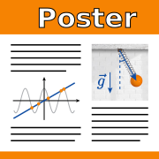

Mathematical foundations and derivation from first principles. Quadratic and cubic curves. Combining curves into splines, tangent continuity, smoothness condition.
Interface, comparison with Adobe Photoshop, Layers panel and document structure, selecting objects and their constituents. Making and editing Bézier splines: Pen tool, inserting and deleting control points, Anchor Point tool, controlling anchor sharpness and smoothness, joining splines.
Appearance panel, stroke and opacity parameters, commands Expand and Expand Appearance. Compound paths, Pathfinder panel, Shape Builder tool.
*Raster image tracing. Grid Tools, Envelope deform command, Blend between two object.
Principles of repetition, contrast, and proximity. Expression via alignment, color, and text formatting.
Means for ensuring repetition in Adobe Illustrator: Eyedropper tool, appearance scaling preferences, Global Swatches.
References
Williams, Robin. The Non-designer's Design Book : Design and Typographic Principles for the Visual Novice. Berkeley, CA : Peachpit Press, 1994
Layout and Text

Align panel, aligning to artboard and to key object. Rulers, Guides, Smart Guides and snapping to Grid. Clipping Masks.
Text layers, text block threading, typing on a path. Panels Character and Paragraph, window Area Type Options and first-baseline offset. Converting text to outlines.
Vector image formats, save options for .ai and .pdf.
*Export to .eps and .svg, rasterisation to .png.